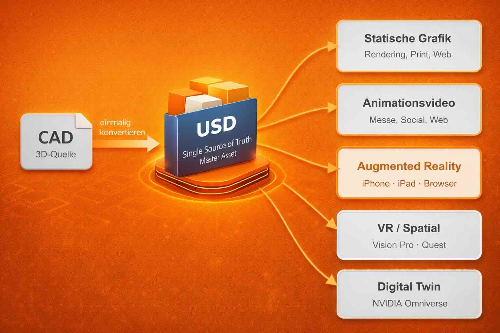

FAQ: Typische Entscheiderfragen vor einer OpenUSD-Einordnung


Bevor über konkrete Vorteile, Tools oder Formate gesprochen wird, stellen sich in Unternehmen meist grundlegendere Fragen. Nicht technischer Natur, sondern mit Blick auf Kosten, Organisation, Abhängigkeiten und Zukunftsfähigkeit. Die folgenden Fragen bündeln typische Überlegungen von Geschäftsführung, Marketing und Vertrieb.
Dieser Text ist die FAQ-Ergänzung zu “OpenUSD für Entscheider”. (Folgt)
Einstieg in OpenUSD — mit Unterstützung.
Wir begleiten Unternehmen vom ersten OpenUSD-Modell bis zum eingebetteten AR-Erlebnis im Vertrieb. Das erste Gespräch dauert 30 Minuten. Ohne Pitch, ohne Vorbereitungspflicht. Rheingas, Somfy und Carl Hamm haben mit einem Produkt begonnen.
Diese Fragen sind in 5 Cluster unterteilt:
- Kosten, Aufwand und versteckte Mehrarbeit
- Organisation, Schnittstellen und interne Reibung
- Abhängigkeiten, Plattformen und Datensouveränität
- Zukunftsfähigkeit und Skalierung
- Umsetzung, Vertrieb und Erfolgsmessung
1. Kosten, Aufwand und versteckte Mehrarbeit
Wo entstehen bei uns doppelte oder dreifache Aufwände in der 3D-Datenaufbereitung, ohne dass wir sie klar beziffern können?
In vielen mittelständischen Maschinenbauunternehmen entstehen parallele 3D-Datenwege, ohne dass dies bewusst so geplant ist. Ein interner Mitarbeiter erstellt aus CAD-Daten punktuell Animationsvideos in Unreal – zeitlich begrenzt und abhängig vom vorhandenen Know-how. Parallel nutzt ein externer Dienstleister dieselben CAD-Daten, um sie für eine Unity-Anwendung aufzubereiten, etwa für eine simulationsnahe SPS-Steuerung. Ein weiterer Dienstleister bereitet die gleichen Ausgangsdaten erneut für Apple-AR auf, beispielsweise für Messe- oder Vertriebszwecke.
Jeder dieser Wege ist fachlich sinnvoll und für seinen Zweck optimiert. Strukturell entstehen jedoch mehrere, voneinander getrennte Konvertierungen und Aufbereitungen derselben Datenbasis. In der Praxis summieren sich so oft drei, vier oder sogar fünf parallele Datenstrecken – ohne dass zusätzlich notwendige CAD-zu-CAD-Anpassungen für unterschiedliche Abteilungen oder Partner bereits berücksichtigt sind.
Die entstehenden Mehrarbeiten verteilen sich über Zeit, Personen, Budgets und Dienstleister hinweg. Dadurch bleiben sie meist unsichtbar – bis Aufwand, Kosten oder externe Vergleiche das zugrunde liegende Muster sichtbar machen.
An dieser Stelle sind, wenn man nicht jedes Mal erneut die CAD-Daten für verschiedene Anwendungsfälle aufbereiten lässt, leicht 20-30 Prozent Einsparung möglich.
Welche Kosten entstehen nicht bei der Erstellung, sondern bei der wiederholten Anpassung und Neuinterpretation von 3D-Daten?
Wenn sich ein Bauteil im Rahmen einer Produktänderung ändert, müssen in der Regel mehrere getrennte 3D-Datenbestände angepasst werden: Renderings, Animationen, Simulationen oder AR-Inhalte. Da diese Daten in unterschiedlichen Systemen und bei verschiedenen Dienstleistern liegen, erfolgt jede Anpassung separat – zeitversetzt und mit erneutem Aufwand.
In der Praxis führt das häufig dazu, dass Visualisierungen aus Kostengründen nicht mehr aktualisiert werden. Produktbilder oder Messeinhalte zeigen dann ältere Varianten, obwohl intern bereits neue Versionen existieren. Nicht aus Nachlässigkeit, sondern weil jede Änderung neue Abstimmung, Beauftragung und Kosten auslöst.
Die eigentlichen Kosten entstehen dabei weniger im einzelnen Arbeitsschritt als durch wiederholte Pflege, Koordination und Verzögerung. Jede Produktänderung vervielfacht den Aufwand über alle nachgelagerten Datenbestände hinweg – mit direkten Auswirkungen auf Zeit, Budget und Aktualität.
Warum ist es für Marketing und Vertrieb oft einfacher, neue Inhalte zu beauftragen, statt bestehende Daten weiterzuverwenden?
Für Marketing und Vertrieb sind vorhandene 3D-Daten häufig schwer zugänglich oder nicht unmittelbar nutzbar. Aufbereitete 3D-Daten liegen zudem oft bei externen Dienstleistern. Nutzungs- und Weiterverwendungsrechte sind eingeschränkt oder nicht eindeutig geregelt, sodass selbst kleinere Anpassungen erneut beauftragt werden müssen.
Da die Kostenstruktur dieser Aufbereitungen für das Unternehmen meist nicht transparent ist, wirken einzelne Änderungen zunächst günstig. In der Summe über Projekte und Zeiträume hinweg entstehen jedoch erhebliche Zusatzkosten.
So entsteht eine Situation, in der Neuproduktion operativ einfacher erscheint – obwohl sie strukturell teurer ist.
Wann rechnet sich eine OpenUSD-Einführung konkret? Welcher ROI-Horizont ist realistisch?
Der Return on Investment zeigt sich typischerweise in zwei Wellen: Die erste Welle beginnt nach dem ersten abgeschlossenen Pilotprojekt, also nach 2 bis 6 Monaten. Hier entstehen messbare Einsparungen, weil 3D-Inhalte erstmals mehrfach genutzt werden statt neu produziert zu werden.
Die zweite Welle — der eigentliche Break-even — liegt für die meisten Mittelständler zwischen 8 und 24 Monaten nach Projektstart. Ausschlaggebend sind drei Faktoren: Wie viele Produkte werden visualisiert? Wie oft ändert sich das Portfolio? Über wie viele Kanäle (Messe, Web, Vertrieb, Schulung) wird dieselbe Visualisierung ausgespielt?
Ein Unternehmen mit 20 konfigurierbaren Produkten, das bisher für jeden Kanal separate Grafiken beauftragt hat, amortisiert die Einführung deutlich schneller als ein Unternehmen mit 3 Standardprodukten und stabiler Kommunikation.
Zur Größenordnung: Das Initialinvestment für einen typischen Mittelständler (Pilotprojekt mit 1–3 Produkten, externe Begleitung) liegt im Bereich 5-10.000 Euro je nach CAD-Ausgangsqualität.
Ab welchem Punkt lohnt es sich, den Ursprung unserer 3D-Daten zu hinterfragen, statt immer neue Folgeprozesse zu optimieren?
Dieser Punkt ist erreicht, wenn nicht mehr einzelne Projekte, sondern wiederkehrende Muster sichtbar werden. Wenn Marketing, Vertrieb, Simulation und externe Partner regelmäßig neue 3D-Aufbereitungen beauftragen, obwohl die Ausgangsdaten bereits existieren. Wenn Anpassungen an Produkten nicht automatisch in allen Visualisierungen ankommen, sondern manuell nachgezogen werden müssen – oder aus Kostengründen unterbleiben.
Spätestens dann, wenn Neuproduktion operativ einfacher erscheint als Wiederverwendung, ist das kein Effizienzproblem einzelner Teams mehr, sondern ein strukturelles Thema. Weitere Optimierung in nachgelagerten Prozessen senkt dann zwar punktuell Aufwand, ändert aber nichts am Grundmuster: Jede Änderung erzeugt erneut Koordination, Kosten und Abhängigkeiten.
An diesem Punkt lohnt es sich, nicht den nächsten Prozess zu verbessern, sondern den Ursprung zu betrachten: Wie 3D-Daten entstehen, wem sie gehören, wie sie strukturiert sind – und ob sie als einmalige Projektdateien oder als dauerhaft nutzbare Unternehmensressource behandelt werden.
Was kostet es uns, NICHT zu handeln? (Opportunitätskosten)
Diese Frage ist schwerer zu beantworten als die ROI-Frage — aber die ehrlichere.
Direkt sichtbare Kosten des Nicht-Handelns: Jedes Produkt, das für Messe, Webseite, Vertriebspräsentation und Schulungsunterlagen separat visualisiert wird, erzeugt Mehrkosten von 20-30 % Mehrkosten durch die Beauftragung von verschiedenen Dienstleistern statt einer Masterdatei für alle Zwecke.
Schwerer messbar, aber real: Verpasste Abschlüsse, weil Vertriebsunterlagen veraltet waren. Messen, bei denen Produkte nicht gezeigt werden konnten, weil die 3D-Aufbereitung zu lange dauerte. Angebote, die ohne visuelle Unterstützung weniger überzeugend waren.
Der Klassiker: Alte 3D-Renderings werden weiterverwendet weil eine neue Grafik ja so hoch Kosten verursacht.
Der häufig unterschätzte Kostenfaktor: Je länger gewartet wird, desto größer wird der Schuldenberg an unstrukturierten 3D-Daten. Eine Einführung in zwei Jahren kostet mehr als eine Einführung heute — nicht wegen steigender Tool-Preise, sondern wegen der wachsenden Datenmenge, die dann bereinigt werden muss.
2. Organisation, Schnittstellen und interne Reibung
Was genau ist heute unser strukturelles Problem mit 3D-Daten – jenseits einzelner Projekte oder Tools?
Das strukturelle Problem zeigt sich meist nicht in einzelnen Projekten, sondern im Gesamtbild: Dieselben CAD-Daten durchlaufen mehrere, voneinander unabhängige Aufbereitungsprozesse. Konstruktion liefert an Marketing, Marketing beauftragt externe Dienstleister, Vertrieb benötigt andere Formate, Simulation arbeitet mit eigenen Konvertierungen.
Jeder Weg ist für sich betrachtet logisch. Strukturell entsteht jedoch ein Muster, bei dem dieselben Ausgangsdaten immer wieder neu interpretiert, vereinfacht oder angereichert werden müssen – ohne dass die Ergebnisse für andere nutzbar bleiben.
Wie oft werden dieselben CAD-Daten bei uns für unterschiedliche Zwecke unabhängig voneinander vereinfacht, ergänzt oder angepasst?
In der Praxis oft drei- bis fünfmal:
- Konstruktion → Marketing: Vereinfachung für Renderings
- Konstruktion → Simulation: Anpassung für FEM/CFD
- Konstruktion → AR-Dienstleister: Optimierung für mobile Darstellung
- Konstruktion → Messestand-Agentur: Export für interaktive Displays
- Konstruktion → Vertrieb: Einzelne Screenshots oder vereinfachte Modelle
Jede dieser Aufbereitungen erfolgt separat, wird projektbezogen beauftragt und bleibt in der Regel nicht über das Projekt hinaus nutzbar.
Wo verlieren wir Zeit zwischen Konstruktion, Simulation, Marketing und Vertrieb, ohne dass es jemandem klar zugeordnet ist?
→ Klärungsschleifen: “Welche Datei ist die aktuelle?”, “In welchem Format braucht ihr das?”
→ Manuelle Datentransfers: E-Mail-Anhänge, FTP-Server, USB-Sticks zwischen Abteilungen
→ Wiederholte Erklärungen: Jeder Dienstleister muss erneut eingewiesen werden, was das Produkt tut
→ Versionskonflikte: Marketing arbeitet mit Stand v2.3, Vertrieb präsentiert v2.1, Konstruktion ist bei v3.0
→ Nachbearbeitung: “Können Sie das noch mal in einer anderen Ansicht rendern?”
Diese Zeit wird selten erfasst, weil sie sich über viele kleine Aufgaben verteilt. Sie ist aber real und bindet Kapazität.
Warum landen Marketing und Vertrieb regelmäßig bei externen Dienstleistern, obwohl die Daten intern bereits existieren?
1. Fehlende Zugänglichkeit
CAD-Daten liegen in Formaten vor, die Marketing/Vertrieb nicht öffnen können. Die Software ist zu teuer, zu komplex oder nicht verfügbar.
2. Fehlende Nutzbarkeit
Selbst wenn die Daten zugänglich wären: CAD-Modelle sind für Konstruktion optimiert, nicht für Präsentation. Sie enthalten technische Details, die für Vertriebszwecke irrelevant sind, und es fehlen visuelle Aufbereitungen (Materialien, Beleuchtung, Umgebung).
3. Fehlende Kapazität
Konstruktion hat keine Zeit, Marketinganfragen zu bedienen. Ihre Priorität liegt auf Produktentwicklung, nicht auf visueller Aufbereitung für externe Kommunikation.
Ergebnis: Marketing beauftragt externe Dienstleister, die dieselben CAD-Daten erneut aufbereiten – weil der direkte Weg intern nicht funktioniert.
Wer macht das intern – haben wir überhaupt die Kapazität?
Die Frage nach der Kapazität ist berechtigt, wird aber oft falsch gestellt. OpenUSD erfordert keine Vollzeitstelle — zumindest nicht am Anfang.
Das typische Profil für eine interne OpenUSD-Verantwortlichkeit: jemand mit 3D-Grundverständnis und Interesse an Kommunikation. Das kann ein Konstrukteur sein, der verstehen will, wie seine CAD-Daten im Vertrieb ankommen. Oder ein Marketing-Mitarbeiter mit Affinität zu 3D-Software. Wichtiger als der Ausgangspunkt ist die Bereitschaft, den Prozess zwischen Konstruktion und Marketing zu moderieren.
Eine eigene Stelle ist in den seltensten Fällen von Beginn an nötig. In der Pilotphase reichen 2 bis 4 Stunden pro Woche für einen bestehenden Mitarbeiter — begleitet durch externe Unterstützung. Nach dem Pilot, wenn Workflows etabliert sind, sinkt der Aufwand auf 2-4 Stunden pro Monat für Pflege und kleinere Updates — solange das Produktportfolio stabil bleibt.
Brauchen wir neue Leute oder reichen Schulungen bestehender Mitarbeiter?
In der Regel reichen Schulungen bestehender Mitarbeiter. Eine Neueinstellung ist erst dann sinnvoll, wenn OpenUSD systematisch über das gesamte Portfolio ausgerollt wird und die interne Datenpflege einen messbaren wöchentlichen Aufwand erzeugt.
Typischer Schulungsrahmen: 2 bis 3 Tage für die Grundworkflows (CAD-Export, Dateistruktur, Ausgabe für verschiedene Kanäle). Danach: begleitetes Learning-by-doing im ersten eigenen Projekt. Die meisten Mitarbeiter arbeiten nach 2 bis 3 begleiteten Projekten selbstständig.
viSales bietet eigene OpenUSD-Schlungsformate an.
Wichtiger als Schulungsdauer ist die Begleitung beim ersten echten Projekt: Hier entscheidet sich, ob der Workflow wirklich in den Arbeitsalltag integriert wird oder als “Ausnahmeprozess” wahrgenommen wird.
Kann OpenUSD schrittweise eingeführt werden oder ist das ein Big Bang?
Schrittweise — immer. Ein Big Bang ist weder nötig noch empfehlenswert. Ein bewährter Stufenplan:
Phase 1 — Pilot (Monat 1–3): Ein einzelnes Produkt oder eine überschaubare Produktvariante wird als OpenUSD-Masterdatei aufgebaut. Ziel: Den Workflow einmal vollständig durchlaufen. Ergebnis: Eine AR-fähige USDZ-Datei, die für mindestens zwei verschiedene Kanäle genutzt wird.
Phase 2 — Produktfamilie (Monat 4–9): Der Workflow wird auf eine ganze Produktfamilie übertragen. Variantenkonfiguration und Versionierung werden erstmals systematisch gelöst. Interne Abläufe zwischen CAD und Marketing werden dokumentiert.
Phase 3 — Portfolio (ab Monat 10): Systematischer Aufbau des gesamten relevanten Produktportfolios. Entscheidung über Automatisierungsgrad und Tool-Integration.
Was passiert mit laufenden Projekten während der Einführung?
Parallelführung. Eine harte Umstellung mitten in laufenden Projekten ist in den meisten Fällen nicht praktikabel und erzeugt unnötigen Stress.
Die pragmatische Empfehlung: Laufende Projekte werden mit den bisherigen Prozessen abgeschlossen. Neue Projekte — oder die nächste Produktgeneration — starten nach dem OpenUSD-Workflow. So entsteht kein Bruch, und das Team kann den neuen Prozess an einem echten, aber zeitlich entzerrten Projekt lernen.
Typische Parallelführung: 3 bis 6 Monate, danach ist der alte Workflow für Neuprojekte abgelöst.
Wer “besitzt” die OpenUSD-Dateien im Unternehmen? Konstruktion? Marketing? IT?
Klare Empfehlung: Konstruktion hält den Schlüssel, Marketing definiert die Anforderungen.
Die OpenUSD-Masterdatei ist geometrisch präzise — das ist die Domäne der Konstruktion. Gleichzeitig muss sie in verschiedene Ausgabeformate und Kontexte (AR, Web, Print, Messe) überführt werden — das ist die Domäne des Marketings. Beide Seiten müssen eingebunden sein, aber einer muss letztverantwortlich sein.
In der Praxis funktioniert folgendes Modell gut: Konstruktion = Datenhoheit und Freigabeverantwortung. Marketing = Ausgabe-Anforderungen und Nutzungsverantwortung. IT stellt die Infrastruktur (Ablagesysteme, Zugriffsrechte) bereit.
Was nicht funktioniert: Zuständigkeit bleibt “irgendwie bei allen” oder liegt ausschließlich bei einer externen Agentur. In beiden Fällen entstehen Pflegelücken.
Wie wird Versionierung organisiert? Wie funktioniert die Freigabe-Kette?
Für den Einstieg reicht eine strukturierte Ordnerlogik mit klaren Namenskonventionen: [Produktname]_v[Versionsnummer]_[Datum]_[Status]. Einfach, ohne Tool-Abhängigkeit, sofort umsetzbar.
Für größere Portfolios oder Teams empfiehlt sich eine PLM-Integration (Product Lifecycle Management), wenn ein solches System bereits existiert. So werden CAD-Änderungen automatisch als Trigger für USD-Updates sichtbar.
Git-ähnliche Systeme (z.B. DVC für große Binärdateien) sind technisch möglich, aber für die meisten Mittelständler in der Einstiegsphase überdimensioniert. Wir haben da eine pragmatische Alternative in Vorbereitung.
Die Freigabe-Kette sollte explizit definiert sein: Wer darf eine neue Version für die Produktion freigeben? Typisch: CAD-Verantwortlicher gibt Geometrie frei → Marketing-Verantwortlicher gibt Ausgabe frei → beide Freigaben sind Voraussetzung für eine neue “aktive” Version.
Wie vermeiden wir, dass OpenUSD zum nächsten ungepflegten Datengrab wird?
Die häufigsten Governance-Fehler, die aus Projekten bekannt sind:
- Kein benannter Verantwortlicher — die Datei “gehört allen” und wird von niemandem gepflegt
- Kein definierter Update-Trigger — Produktänderungen in CAD landen nicht automatisch auf dem Radar des OpenUSD-Verantwortlichen
- Zu ambitionierter Start — zu viele Produkte auf einmal, zu wenig Prozessdisziplin, dann Überforderung
- Abhängigkeit von externem Dienstleister für Routinepflege — sobald der Dienstleister wechselt, ist der Workflow tot
Gegenmaßnahmen: Einen namentlich benannten internen Owner definieren. Einen expliziten Update-Prozess einrichten (z.B. “Bei jeder CAD-Freigabe wird geprüft, ob die OpenUSD-Masterdatei aktualisiert werden muss”). Quartalsweise Review einplanen: Welche Dateien sind veraltet? Welche werden aktiv genutzt?
3. Abhängigkeiten, Plattformen und Datensouveränität
Welche Abhängigkeiten gehen wir ein, wenn wir die komplette 3D-Pipeline eines einzelnen Softwareanbieters nutzen?
Wer sich ausschließlich auf einen Anbieter verlässt – sei es Apple, NVIDIA oder ein proprietäres System – bindet sich an dessen Roadmap, Preismodell und technologische Entscheidungen.
Konkrete Risiken:
→ Preisänderungen: Lizenzmodelle können sich ändern, Kosten steigen
→ Feature-Entscheidungen: Der Anbieter entscheidet, welche Funktionen weiterentwickelt werden
→ Plattform-Verfügbarkeit: Was passiert, wenn ein Dienst eingestellt wird?
→ Datenformat-Lock-in: Export in andere Systeme kann eingeschränkt oder verlustbehaftet sein
OpenUSD reduziert diese Abhängigkeit, weil es als offener Standard nicht an einen Anbieter gebunden ist. Inhalte bleiben nutzbar, auch wenn einzelne Tools oder Plattformen sich ändern.
Was passiert mit unseren 3D-Inhalten, wenn sich Anforderungen ändern – neue Kanäle, neue Geräte, neue Kundenvorgaben?
Bei klassischen Workflows bedeutet jede neue Anforderung: Neuproduktion.
→ Neuer Ausgabekanal (z.B. Web statt Print) → Daten müssen neu aufbereitet werden
→ Neues Gerät (z.B. Vision Pro statt iPad) → Andere Formate, andere Optimierung
→ Neue Kundenvorgabe (z.B. interaktive Konfiguration statt statische Bilder) → Komplett neuer Workflow
Mit OpenUSD als Masterdatei reduziert sich dieser Aufwand erheblich. Die strukturierten Ausgangsdaten bleiben bestehen, nur die finale Aufbereitung für den jeweiligen Kanal variiert.
Wie stellen wir sicher, dass Investitionen in 3D-Inhalte nicht an einzelne Tools oder Dienstleister gebunden bleiben?
1. Datenhoheit behalten
Die OpenUSD-Masterdatei sollte beim Unternehmen liegen, nicht beim Dienstleister. Externe Partner arbeiten mit der Datei, aber das Eigentum und die Kontrolle bleiben intern.
2. Offene Formate nutzen
OpenUSD ist ein offener Standard. Inhalte lassen sich von verschiedenen Tools lesen und bearbeiten. Damit entsteht keine Abhängigkeit von einzelnen Softwareanbietern.
3. Dokumentation und Nachvollziehbarkeit
Aufbau, Struktur und Entscheidungen sollten dokumentiert sein. Wenn ein Dienstleister ausfällt, muss ein anderer die Arbeit übernehmen können.
Welche Rolle spielt Datensouveränität für uns: Wollen wir die Struktur unserer Inhalte selbst kontrollieren oder auslagern?
Das ist eine strategische Entscheidung, die jedes Unternehmen selbst treffen muss.
Option A: Kontrolle behalten (empfohlen)
Das Unternehmen verwaltet die OpenUSD-Masterdatei intern. Dienstleister arbeiten auf Basis dieser Datei, liefern aber ihre Ergebnisse zurück in die zentrale Struktur.
Vorteil: Volle Kontrolle, keine Abhängigkeit, langfristige Nutzbarkeit
Nachteil: Erfordert interne Kapazität und Know-how
Option B: Auslagern
Ein externer Partner verwaltet die Datenstruktur. Das Unternehmen bezieht Outputs (Bilder, Videos, AR-Inhalte), hat aber keinen direkten Zugriff auf die Masterdatei.
Vorteil: Keine interne Kapazität nötig
Nachteil: Hohe Abhängigkeit, eingeschränkte Flexibilität, höhere langfristige Kosten
Für die meisten mittelständischen Unternehmen ist Option A langfristig wirtschaftlicher – auch wenn der Einstieg mehr Aufwand erfordert.
Ist man bei Apple/NVIDIA dann nicht trotzdem gefangen? (Vendor Lock-in)
Wichtige Differenzierung: Apple und NVIDIA nutzen denselben Standard (OpenUSD), setzen ihn aber unterschiedlich ein:
→ Apple: Fokus auf Endgeräte und Distribution (AR Quick Look, USDZ)
→ NVIDIA: Fokus auf Systeme und Pipelines (Omniverse, Simulation)
Da beide auf OpenUSD basieren, sind die Daten zwischen beiden nutzbar. Ein USDZ, das für Apple erstellt wurde, kann in Omniverse geöffnet werden. Ein in Omniverse strukturiertes Modell kann als USDZ exportiert werden.
Kein Lock-in, sondern Wahlfreiheit: Unternehmen können sogar Apple-AR für Vertrieb nutzen UND gleichzeitig NVIDIA für Simulation – mit derselben Datenbasis wenn Sie das Tool USDbridge nutzen.
Was passiert, wenn ein Dienstleister ausfällt?
Wenn die OpenUSD-Masterdatei beim Unternehmen liegt (siehe Datensouveränität), ist der Ausfall eines Dienstleisters weniger kritisch.
Szenario 1: Dienstleister hat die Daten
→ Problem: Masterdatei ist weg oder nicht zugänglich
→ Lösung: Neuaufbau, hoher Aufwand
Szenario 2: Unternehmen hat die Daten
→ Problem: Dienstleister fällt aus
→ Lösung: Anderer Dienstleister kann auf derselben Datenbasis weiterarbeiten
Empfehlung: OpenUSD-Dateien sollten als Unternehmensressource behandelt werden, nicht als Dienstleister-Output.
Was, wenn OpenUSD sich nicht durchsetzt?
OpenUSD ist kein Startup-Experiment, sondern ein Standard, der von Pixar entwickelt und von Apple, NVIDIA, Disney, Autodesk, Adobe, SIEMENS, BMW und vielen anderen getragen wird.
Die Alliance for OpenUSD (AOUSD) stellt sicher, dass der Standard nicht von Einzelinteressen abhängt. Mitglieder sind u.a.:
→ Pixar, Apple, NVIDIA, Adobe, Autodesk
→ SIEMENS, BMW, Mercedes-Benz
→ Disney, Sony, Epic Games
Realistische Einschätzung: OpenUSD ist bereits Industriestandard. Die Frage ist nicht, ob er sich durchsetzt, sondern wie schnell die Adoption im Mittelstand erfolgt.
Selbst im unwahrscheinlichen Fall, dass OpenUSD ersetzt wird: Die Daten sind offen und standardisiert, eine Migration in andere Formate ist deutlich einfacher als bei proprietären Systemen.
Was sind typische Stolpersteine in den ersten 6 Monaten?
Aus der Projekterfahrung sind dies die häufigsten:
Unterschätzte CAD-Datenqualität: Die meisten CAD-Modelle sind für die Konstruktion optimiert, nicht für Visualisierung. Fehlende Materialdefinitionen, inkonsistente Benennungen, nicht zusammengeführte Baugruppen — das kostet Zeit, die im Projektplan nicht eingeplant war.
Fehlende interne Abstimmung: Konstruktion und Marketing sprechen unterschiedliche Sprachen. Ohne einen definierten Abstimmungsprozess entstehen Missverständnisse darüber, was die Masterdatei leisten soll.
Unrealistische Erwartungen an “eine Datei für alles”: OpenUSD standardisiert die Datenstruktur — aber nicht jeden Output. Für einen hochwertigen Messeeinsatz braucht eine AR-Datei mehr Aufbereitung als für eine schnelle Vertriebsdemonstration. Das ist keine Schwäche des Standards, sondern eine Frage des Ausgabeziels.
Kein definierter Updateprozess: Das Pilotprodukt ändert sich — und niemand weiß, dass die OpenUSD-Datei aktualisiert werden muss.
4. Zukunftsfähigkeit und Skalierung
Warum sind 3D-Daten bei uns heute projektbezogen organisiert, aber nicht als dauerhaft nutzbare Unternehmensressource?
Das liegt meist an historisch gewachsenen Strukturen:
→ Projekt-Logik: Jedes Projekt beauftragt eigene Visualisierungen
→ Budget-Logik: Kosten werden pro Projekt abgerechnet, nicht als Investment betrachtet
→ Tool-Logik: Verschiedene Tools erzeugen verschiedene Formate, die nicht kompatibel sind
→ Dienstleister-Logik: Externe Partner liefern projektbezogen, behalten oft die Masterdaten
OpenUSD ändert das Grundprinzip: Statt projektbezogener Outputs entsteht eine zentrale, wiederverwendbare Datenbasis.
Was passiert, wenn wir in zwei oder drei Jahren zusätzliche Ausgabekanäle bedienen müssen – bauen wir dann wieder neue Pipelines auf?
Ohne OpenUSD: Ja.
Mit OpenUSD: Nein.
Neue Ausgabekanäle erfordern neue Exporte oder Anpassungen, aber nicht den kompletten Neuaufbau der 3D-Daten. Die Masterdatei bleibt stabil, nur die finale Aufbereitung variiert.
Beispiel:
→ Heute: Website mit 3D-Konfigurator, Messestand mit AR
→ In 2 Jahren: Zusätzlich VR-Showroom, Spatial Presentation für Vision Pro
→ Ohne OpenUSD: Vier separate Datenbestände, alle neu aufbereitet
→ Mit OpenUSD: Eine Masterdatei, vier verschiedene Exporte
Wie können wir sicherstellen, dass heutige Investitionen auch für zukünftige Anwendungsfälle nutzbar bleiben?
1. Offene Standards nutzen
OpenUSD ist ein offener, von der Industrie getragener Standard. Keine Abhängigkeit von einzelnen Anbietern.
2. Strukturierte Daten statt finale Outputs
Nicht nur Renderings oder Videos speichern, sondern die strukturierte OpenUSD-Datei. Sie bleibt flexibel anpassbar.
3. Dokumentation und Wissenssicherung
Aufbau, Struktur und Entscheidungen sollten nachvollziehbar sein. So bleibt die Datei auch bei Personalwechseln nutzbar.
5. Umsetzung, Vertrieb und Erfolgsmessung
Welche CAD-Systeme funktionieren gut/schlecht mit OpenUSD?
Der Export selbst ist bei den meisten modernen CAD-Systemen lösbar — die eigentliche Herausforderung liegt in der Qualität der Ausgangsdaten.
Gut unterstützt: SolidWorks (über SOLIDWORKS Visualize oder Drittanbieter-Plugins), Rhino 3D (native USD-Unterstützung), Blender, Cinema 4D.
Machbar mit Aufwand: PTC Creo, Autodesk Inventor (neuere Versionen), Fusion 360.
Komplex, spezialisierte Werkzeuge nötig: CATIA, Siemens NX — beide weit verbreitet im Maschinenbau und in der Aerospace-Industrie, beide erfordern entweder Middleware oder spezialisierte Export-Pipelines.
viSales hat schon diverse Exporter / Konverter entwickelt, darunter die USDbridge Omniverse <> Apple.
Wichtige Ergänzung: Der Exportprozess ist in den meisten Fällen lösbar. Was unterschätzt wird, ist die Nachbereitung — Materialien definieren, Level-of-Detail anpassen, Dateigröße optimieren. Das ist unabhängig vom CAD-System und erfordert 3D-Kompetenz.
Was bedeutet OpenUSD für unsere bestehende CAD-Lizenzstruktur?
In den meisten Fällen: keine neuen Lizenzen nötig. Der USD/USDZ-Export kann häufig über bestehende Tools oder kostenlose Plugins realisiert werden.
Ausnahmen gibt es bei sehr spezifischen Anforderungen (automatisierte Batch-Exporte für große Portfolios, direkte PLM-Integration) — hier können kostenpflichtige Middleware-Lösungen sinnvoll sein.
Die größere Investition liegt nicht in Lizenzen, sondern in der einmaligen Einrichtung des Export-Workflows und der Schulung des CAD-Teams.
Export-Workflow: Wie komplex ist der wirklich? Kann das unser CAD-Team ohne Schulung?
Nach einmaliger Einrichtung und Schulung: überschaubar.
Für ein gut strukturiertes CAD-Modell liegt der Aufwand für einen Export bei 15 bis 45 Minuten — inklusive Qualitätsprüfung der Ausgabedatei. Bei wiederkehrenden Updates (kleinere Änderungen am bestehenden Modell) oft deutlich weniger.
Die einmalige Ersteinrichtung — Export-Pipeline konfigurieren, Materialien definieren, Ausgabequalität abstimmen — dauert je nach CAD-System und Modellkomplexität einen halben bis fünf Tage.
Automatisierung ist für größere Portfolios möglich und sinnvoll: Skriptbasierte Batch-Exporte können den manuellen Aufwand auf nahezu null reduzieren, erfordern aber technische Kompetenz bei der Einrichtung: Eine der Expertisen von viSales.
Wer pflegt die OpenUSD-Masterdatei langfristig? Konstruktion oder Marketing?
Empfehlung: Die Konstruktion exportiert und pflegt die Masterdatei. Das Marketing definiert, was die Datei leisten muss.
Dieses Modell funktioniert deshalb, weil die Geometrie im CAD-System ohnehin gepflegt wird — der USD-Export ist dann ein zusätzlicher Schritt im bestehenden Freigabeprozess, kein separater Workflow. Marketing hält keinen eigenen 3D-Datensatz vor, sondern nutzt die freigegebene Masterdatei als Ausgangspunkt für alle Ausgabeformate.
Wie ändert sich das Verkaufsgespräch konkret durch OpenUSD/AR?
Vorher:
→ Vertrieb zeigt PowerPoint mit statischen Produktbildern
→ Kunde stellt Fragen zu Varianten: “Gibt es das auch in größer?”
→ Vertrieb muss zurück ins Büro, neue Bilder anfordern, Folgetermin vereinbaren
→ Entscheidung verzögert sich
Nachher:
→ Vertrieb zeigt AR-Modell direkt beim Kunden (iPad/iPhone)
→ Kunde sieht das Produkt im Raum, in Originalgröße
→ Varianten können direkt gewechselt werden (Farbe, Größe, Ausstattung)
→ Entscheidung fällt im ersten Gespräch
Was kann der Vertrieb jetzt, was vorher nicht ging?
→ Produktvarianten live zeigen (ohne Rückfragen ans Büro)
→ Größenvergleiche vor Ort (AR zeigt Maschine in Originalgröße beim Kunden)
→ Komplexe Funktionen erklären (animierte Abläufe statt statische Bilder)
→ Dokumentation im Gespräch (Screenshots/Videos der AR-Ansicht als Gesprächsprotokoll)
→ Schnellere Angebotserstellung (Kunde wählt Konfiguration, Vertrieb übernimmt direkt ins Angebot)
Mobile-Nutzung: Funktioniert das wirklich beim Kunden vor Ort?
Ja – mit klaren Rahmenbedingungen:
→ Apple-Ökosystem: iPhone/iPad sind im B2B weit verbreitet, AR Quick Look funktioniert out-of-the-box
→ Keine App nötig: QR-Code scannen, AR-Inhalt öffnet sich direkt
→ Offline-fähig: USDZ-Dateien können vorab heruntergeladen werden, kein Internet beim Kunden nötig
Einschränkungen:
→ Android-Geräte: Eingeschränkte Unterstützung (siehe USDZ-Seite)
→ Lichtverhältnisse: AR funktioniert besser bei guter Beleuchtung
→ Raumgröße: Sehr große Maschinen brauchen entsprechend Platz für AR-Darstellung
Wer in unserer Branche macht das schon? Wo ist der First-Mover-Vorteil?
Die frühen Anwender kommen aus Branchen mit hohem Visualisierungsbedarf und komplexen Produkten: Aerospace, Automotive, Hightech-Electronics. Dort ist OpenUSD seit 2022/2023 systematisch im Einsatz.
Im deutschen Mittelstand — Maschinenbau, Anlagenbau, Medizintechnik, Möbel/Interior — sind es derzeit die Unternehmen, die AR aktiv im Vertrieb einsetzen wollen und gemerkt haben, dass der bisherige Weg (separate Visualisierung pro Kanal) nicht skaliert.
First-Mover-Vorteil: Wer OpenUSD heute einführt, hat in 8 bis 24 Monaten einen Datenbestand, den Wettbewerber erst aufbauen müssen. Das gilt besonders für Branchen, in denen Konfigurierbarkeit und Produktvarianz hoch sind.
Können wir damit echte Differenzierung schaffen oder macht das bald jeder?
Aktuelle Situation (2026):
→ AR wird viel beworben (Hype-Phase)
→ Wenige setzen es wirklich ein (Umsetzungslücke)
→ Noch weniger machen es gut (Qualitätslücke)
First-Mover-Vorteil existiert noch – aber das Zeitfenster schließt sich. In 2-3 Jahren wird AR im B2B-Vertrieb Standard sein.
Differenzierung entsteht nicht durch “wir haben AR”, sondern durch:
→ Wie gut ist die Qualität? (realistische Darstellung, flüssige Performance)
→ Wie sinnvoll ist der Einsatz? (AR wo es hilft, nicht als Selbstzweck)
→ Wie integriert ist es? (Teil des Vertriebsprozesses, nicht isoliertes Feature)
Welche Dienstleister können OpenUSD wirklich? Red Flags bei Agentur-Auswahl?
OpenUSD ist ein 10 Jahre alter Standard. Viele Agenturen bieten heute immer noch “AR” und “3D” an — aber nicht alle verstehen die zugrunde liegende Datenstruktur. Der Unterschied ist entscheidend für die langfristige Nutzbarkeit der erstellten Inhalte.
Red Flags:
- Die Agentur spricht nur von “AR-Erlebnissen”, nicht von Datenstrukturen oder Masterdateien
- Jeder Ausgabekanal wird als separates Projekt verkauft, ohne gemeinsame Datenbasis
- Keine nachweisbare Erfahrung mit CAD-Daten-Import und -Aufbereitung
- Die Masterdatei bleibt nach Projektabschluss bei der Agentur, nicht beim Kunden
- Kein Verständnis für Vertriebsprozesse — rein marketinggetriebenes Denken ohne Einblick in B2B-Verkaufsprozesse
Was eine gute Agentur/ein guter Dienstleister mitbringen sollte: Nachweisliche Erfahrung mit CAD-Quellmaterial. Klares Konzept, wie die Masterdatei beim Kunden bleibt und intern gepflegt werden kann. Verständnis dafür, dass der erste Ausgabekanal nicht der letzte sein wird.
In-house vs. Agentur vs. Hybrid – was sollte man auf jeden Fall intern behalten?
Intern behalten:
- Datenhoheit und Entscheidung über die Masterdatei-Struktur
- CAD-Export (oder zumindest die Freigabe der Ausgangsdaten)
- Strategische Entscheidungen: Welche Produkte werden wie visualisiert?
Extern einkaufen:
- Spezialisierte 3D-Aufbereitung für komplexe Geometrien oder besondere Ausgabequalität
- Animation, Konfigurationslogik, programmiertechnisch komplexe AR-Anwendungen
- Initiale Einrichtung der Export-Pipeline
Hybrid:
- Erste Masterdatei gemeinsam mit einem Dienstleister entwickeln — als Lernprojekt
- Danach interne Pflege und Updates, externer Dienstleister für außerordentliche Anforderungen
Das Ziel sollte immer sein: Nach dem ersten Projekt ist das interne Team in der Lage, Standardupdates selbstständig durchzuführen. Dauerhafte vollständige Abhängigkeit von einem Dienstleister ist kein gutes Zeichen — weder für die Agentur noch für den Kunden.
Woran messen wir Erfolg nach 6/12 Monaten?
Harte KPIs:
- Kostenreduktion: Wie viel wurde bei 3D-Aufbereitungen eingespart gegenüber dem Vorjahr? (Vergleich: Anzahl Aufträge an externe Visualisierer × durchschnittlicher Auftragswert)
- Zeitersparnis: Wie lange dauert heute eine Produktvisualisierung für einen neuen Kanal im Vergleich zum bisherigen Prozess?
- Wiederverwendungsrate: Wie oft wird dieselbe OpenUSD-Datei für verschiedene Ausgabezwecke genutzt? (Ziel: mindestens 3 verschiedene Ausgabeformate aus einer Masterdatei)
- Aktualitätsgrad: Wie groß ist die Zeitdifferenz zwischen CAD-Freigabe und aktualisierter Visualisierung? (Ziel: unter 2 Wochen)
Weiche KPIs:
- Vertriebsnutzung: Wie oft setzen Vertriebsmitarbeiter AR aktiv im Kundengespräch ein? Empfehlung: monatliche Abfrage per kurzer Umfrage.
- Kundenfeedback: Werden AR-Präsentationen aktiv kommentiert? Stellen Kunden Folgefragen zum Produkt (statt zur Visualisierung)?
- Interne Nachfrage: Fordern Abteilungen selbst 3D-Inhalte an — oder muss Marketing immer anschieben?
- Weniger Rückfragen: Anzahl der “Können Sie das noch mal anders zeigen?”-Anfragen nach Angeboten.
Ansätze zur Messung weicher KPIs:
- Vorher/Nachher-Befragung im Vertriebsteam (3 Fragen, anonym, quartalsweise)
- Anzahl Folgetermine nach Erstgespräch — weniger kann bedeuten: Entscheidung fällt schneller
- Anzahl Änderungswünsche nach Angebotserstellung — weniger bedeutet: Kunde hatte bereits ein klares Bild
- Optionaler NPS beim Kunden nach Präsentation
Typische Projektdauer für einen Piloten?
Von Kick-off bis zur ersten einsatzfähigen AR-Darstellung: 4 bis 8 Wochen für ein einzelnes, gut dokumentiertes Produkt.
Von Kick-off bis zur Vertriebsintegration (Workflow steht, Mitarbeiter sind geschult, Datei ist im Einsatz): 2 bis 4 Monate.
Portfolio-Ausbau auf 10+ Produkte: 6 bis 12 Monate, abhängig von CAD-Datenqualität und internen Kapazitäten.
Die häufigste Ursache für Verzögerungen ist nicht die Technik, sondern die Klärung interner Zuständigkeiten und die Qualität der Ausgangsdaten.
Dieser Text entstand im Rahmen meiner Vorbereitungen für eine Seite zum Thema “OpenUSD für Entscheider” und wird in Zukunft auf der neuen Seite unter “Weitere Infos” als Longread angeboten werden.
Wie es weitergehen kann
Wenn unsere Arbeitsweise zu eurer Fragestellung passt, gibt es verschiedene Möglichkeiten, weiterzugehen. Nicht jede Anfrage muss sofort ein Projekt sein – oft reicht ein erstes gemeinsames Einordnen.
Alle Leistungen rund um OpenUSD und was das für deinen Vertrieb bedeutet: OpenUSD Dienstleister viSales
Ins Gespräch kommen
Wenn du prüfen möchtest, ob ein überschaubarer Einstieg sinnvoll ist, sprechen wir darüber in Ruhe. Ohne Pitch, bei einer Tasse Tee oder Kaffee.
Diese FAQ beantwortet typische Entscheiderfragen rund um OpenUSD. Die vollständige Einordnung mit Praxisbeispielen und Video gibt es hier: OpenUSD für Entscheider